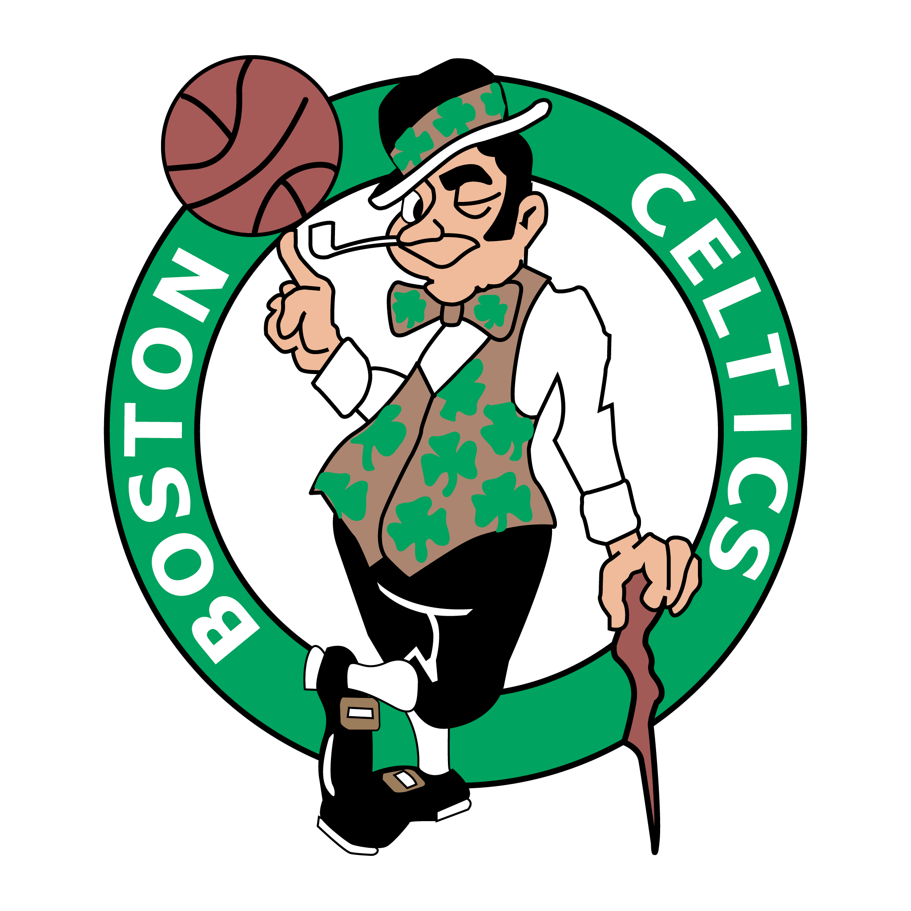
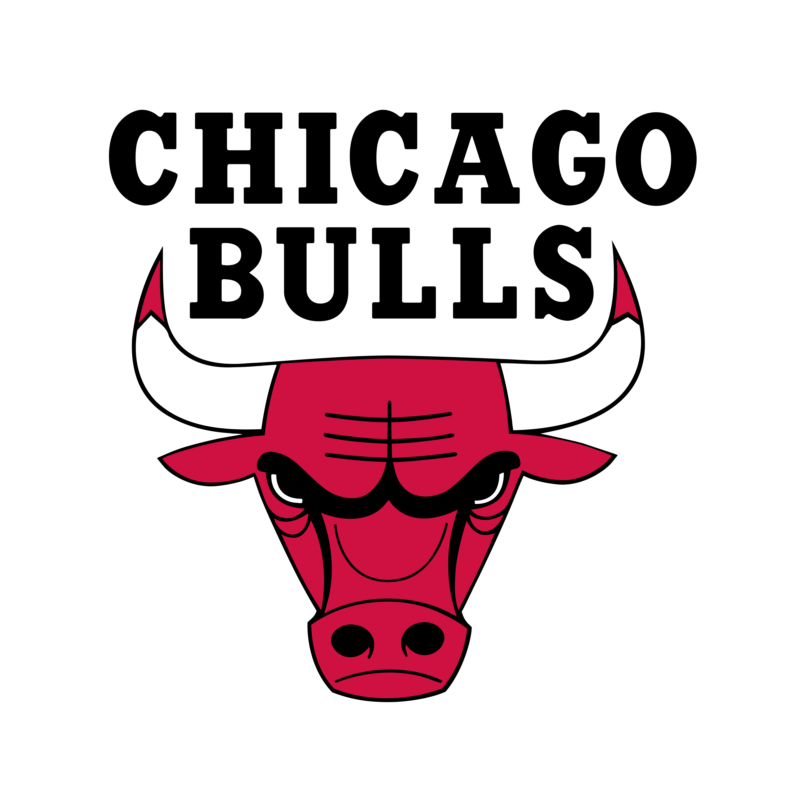

BOSTON CELTICS

O Boston Celtics é uma franquia de basquetebol filiada à National Basketball Association e situada na cidade
de Boston, no estado americano de Massachusetts. Fundado em 6 de junho de 1946, é uma das únicas equipes que
se mantém desde que foi criada. É propriedade da Boston Basketball Partners LCC e joga os seus jogos em casa
no TD Banknorth Garden, dividindo o ginásio com o Boston Bruins da National Hockey League. É conhecido
mundialmente por obter 17 títulos da NBA, o que o deixa como o maior vencedor da história da liga junto ao
Los Angeles Lakers.
LOS ANGELES LAKERS

Los Angeles Lakers é um time de basquetebol da NBA (National Basketball Association) com sede em Los Angeles,
Califórnia. A equipe foi fundada em 1947, em Minneapolis, onde recebeu seu nome em alusão ao fato do estado
de Minnesota ser conhecido como "Terra dos Mil Lagos", e venceu cinco títulos da liga antes de uma queda de
público presente levar a uma relocação para Los Angeles em 1960. No fim dos anos 1970 e no começo dos anos
1980, a popularidade do Lakers cresceu, tornando-se uma das franquias de maior sucesso, além de ser a com
maior número de títulos, 17, empatado com o Boston Celtics.
CHICAGO BULLS

O Chicago Bulls é um time de basquete profissional americano sediado em Chicago, Illinois. Os Bulls competem
na NBA como um membro da Divisão Central da Conferência Leste da liga. A equipe foi fundada em 16 de janeiro
de 1966. Os Bulls jogam seus jogos em casa no United Center. Os Bulls tiveram sucesso durante os anos 90,
quando foram responsáveis por popularizar a NBA em todo o mundo. Eles são conhecidos por terem uma das
maiores dinastias da NBA, vencendo seis títulos da NBA entre 1991 e 1998. Todas as seis equipes foram
lideradas por Michael Jordan, Scottie Pippen e pelo técnico Phil Jackson. Os Bulls é a única franquia da NBA
a vencer vários campeonatos e nunca perder uma série de finais da NBA em sua história. Muitos especialistas
e analistas consideram o Bulls de 1992 uma das maiores equipes da história da NBA.